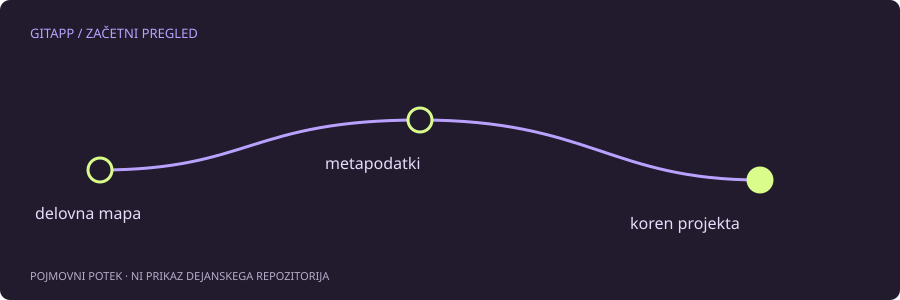

Napaka je o lokaciji
Sporočilo not a git repository pove, da Git na trenutni lokaciji ni našel ustreznega repozitorija. Pogost vzrok je preprost: terminal je odprt v nadrejeni mapi, čeprav urejevalnik prikazuje datoteke projekta v podmapi. Isti videz datotek še ne pomeni, da je trenutna mapa tudi koren repozitorija.
Druga možnost je arhiv ZIP, prenesen s spletne strani. V njem je lahko vsebina projekta brez zgodovine in brez metapodatkov Git. Tak arhiv ni isto kot kloniranje repozitorija. Ukaz git init bi ustvaril nov repozitorij, ne pa obnovil manjkajoče zgodovine.
Preverjanje brez spreminjanja datotek
V terminalu se najprej premakni v mapo, za katero veš, da vsebuje projekt. Nato preveri:
git rev-parse --show-toplevel
git statusPrvi ukaz ob uspehu izpiše korensko mapo delovnega drevesa. Če spet vrne napako, še nimaš potrditve, da je na tej lokaciji obstoječi repozitorij. Preveri tudi, ali delaš v pravem terminalu, vsebniku ali oddaljenem okolju. Urejevalnik in terminal lahko kažeta različna datotečna sistema.
Ne išči samo mape .git
Pri običajnem klonu je .git mapa, pri povezanem delovnem drevesu pa je lahko datoteka, ki kaže drugam. Njena odsotnost v grafičnem prikazu tudi ni dokaz, da je ni: prikazovalnik lahko skriva datoteke z začetno piko.
Metapodatkov ne briši in ne prestavljaj kot način popravljanja napake. S tem lahko izgubiš povezavo z zgodovino, vejami in lokalnimi zapisi, čeprav navadne datoteke ostanejo vidne. Če je bil projekt premaknjen, preveri, ali se je preselil kot celota.
Kdaj je nov klon primernejši
Če imaš le arhiv in želiš sodelovati pri obstoječem projektu, je pogosto bolj razumljivo klonirati pravi oddaljeni repozitorij v novo, ločeno mapo. Lokalnih sprememb iz stare mape ne prepisuj samodejno čez novi klon. Najprej jih primerjaj in prenesi samo tisto, kar res želiš ohraniti.
Naslov za kloniranje vzemi iz preverjenega vira. Ne vpisuj dostopnega žetona v naslov, ki ga nato objaviš v poročilu o težavi. Če potrebuješ zasebni repozitorij, mora biti ustrezno urejeno tudi preverjanje pristnosti.
Kdaj uporabiš git init
Inicializacija je prava odločitev, ko namerno začenjaš povsem novo zgodovino v novi mapi. Ni univerzalna rešitev za napako pri obstoječem projektu. Pred izbiro se vprašaj: ali pričakujem zgodovino, veje in oddaljene povezave, ki že obstajajo? Če je odgovor da, najprej poišči pravilen klon ali preveri varnostno kopijo.
Vir in obseg
Referenca: uradni priročnik za git-rev-parse. Primeri so pripravljeni za učenje in niso opis posega v dejanski projekt. Preberi način preverjanja.